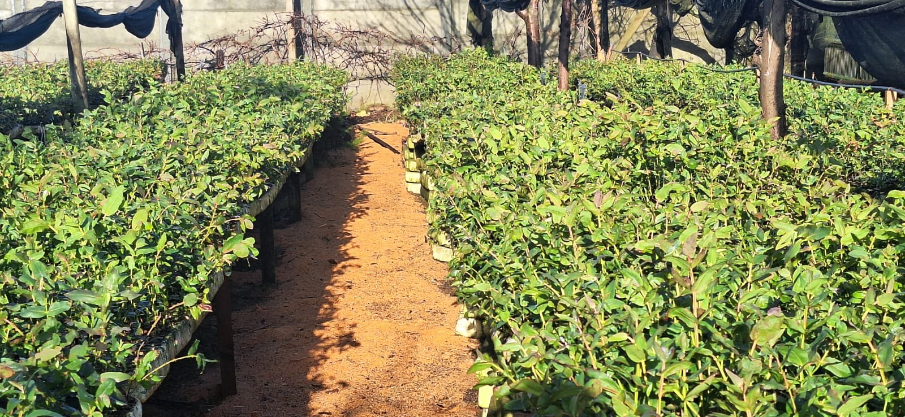

Nueva Imperial, Región de La Araucanía
Plantas, árboles y frutales para espacios con vida.
Vivero en Nueva Imperial con plantas nativas, eucaliptos, pinos, maderas, carbón nativo y leña para jardines y proyectos forestales.

Explora el sitio
Información clara, separada por módulos
Cada módulo funciona como una página independiente para editar textos, fotos y datos sin complicar el proyecto.
Nosotros
Historia editable, enfoque del vivero y atributos de confianza.
02Productos
Categorías principales: ornamentales, frutales, nativas y más.
03Galería
Fotos reales con nombres referenciales de plantas y especies.
04Ubicación
Información general de Nueva Imperial y espacio para mapa.
05Contacto
WhatsApp, Facebook, dirección y horarios editables.

Productos de temporada
Una vitrina simple para orientar consultas.
Revisa el listado de precios 2026 y consulta disponibilidad antes de visitar. Atendemos en Pasaje Los Cipreses N° 22, Huertos Familiares, Nueva Imperial.
Ver galería de fotos